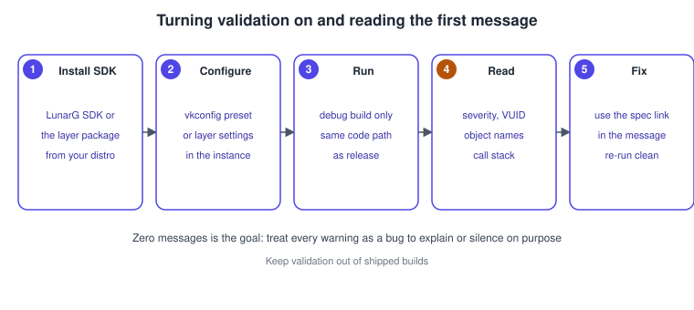
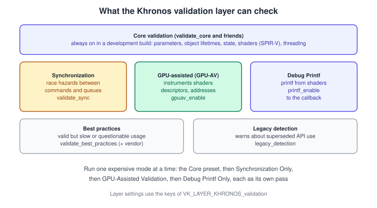
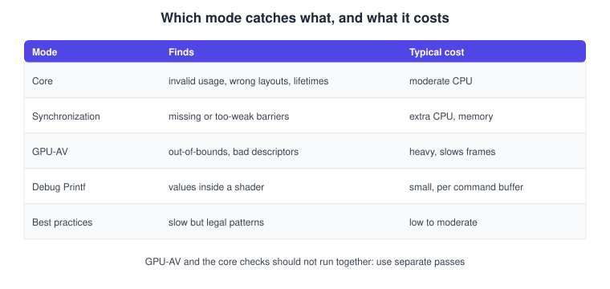
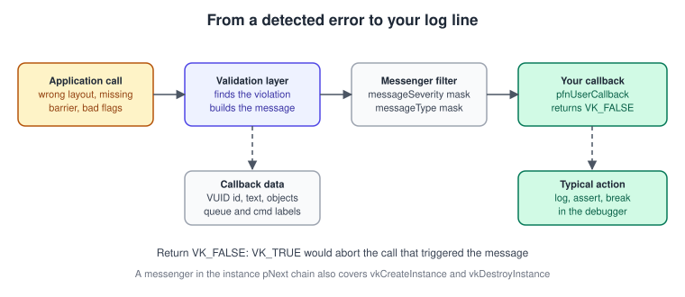
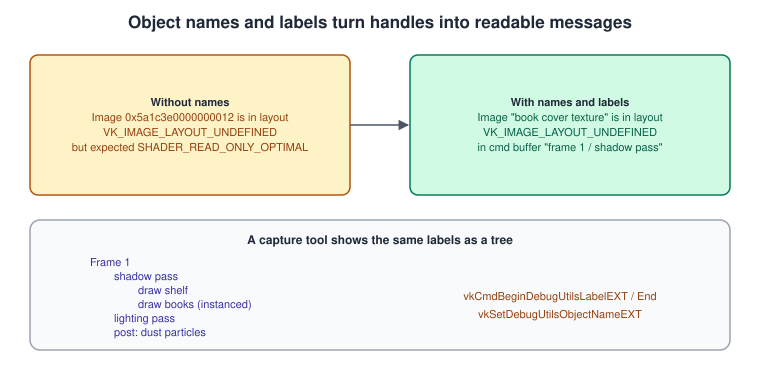

Validation and Debug Utils
|
This content was generated with the assistance of AI and should be verified against the official documentation before being relied on in production. |
Vulkan does very little checking of its own. The driver assumes that every handle is valid, every structure is filled in as the specification says and every barrier is correct; if not, the result is undefined behaviour, which usually means a crash or a wrong picture on one vendor’s GPU and a perfect picture on another’s. The validation layer is the answer: a layer (see Instances, the Loader and Layers) that checks every call against the rules of the specification and tells you, in words, what you did wrong and which rule it breaks. The debug utils extension is the other half: it delivers those words to your program and lets you attach names to objects, so that the words are readable.
The facts were checked in November 2026. The version documented is Vulkan 1.4 with the Khronos validation layer shipped in the LunarG
Vulkan SDK 1.4.363.0 (2026-09-29) and in the Android NDK; the Vulkan Bookshelf running example needs Vulkan 1.3 as a minimum. The
validation layer is developed in the Vulkan-ValidationLayers repository of the Khronos Group, and its settings change between SDK
releases, so the setting names below are the ones of the current layer and are always listed by the Vulkan Configurator for the
version you have installed. Requirements: the SDK (or the layer package of your Linux distribution, or the Android layer binaries), a
debug build of your program and a debug-utils-capable instance.
This page covers the instance, layers and extensions rows of the Vulkan Programming Guide ("VPG", chapter 1) and the Vulkan Cookbook ("VCB", chapter 1) for the validation part, and what neither book has: object names and labels, GPU-assisted validation, Debug Printf, synchronization validation and the best-practices layer. Where the running example is at: step 1 of the Vulkan Bookshelf (C++20, Vulkan-Hpp RAII, VMA, GLFW or SDL3, Slang shaders with GLSL and HLSL alternatives) is an instance with validation, and every later step uses what is built here. Many topics have their own pages: barriers in Synchronization and Synchronization2, descriptor indexing in Bindless: Descriptor Indexing, Buffer Addresses and Heaps, and capture tools in Debugging and Capture Tools.
What you will see

The Khronos validation layer
Since the SDK that introduced it (version 1.1.106), the validation layer has been one single layer called
VK_LAYER_KHRONOS_validation. It replaced the set of layers that VPG and VCB describe, VK_LAYER_LUNARG_standard_validation with its
parts VK_LAYER_LUNARG_parameter_validation, VK_LAYER_LUNARG_object_tracker, VK_LAYER_LUNARG_core_validation and
VK_LAYER_GOOGLE_threading (and the VK_LAYER_GOOGLE_unique_objects layer). Those names no longer exist; requesting one fails with
VK_ERROR_LAYER_NOT_PRESENT. The checks of all of them live in the one layer and are switched on and off as settings rather than
as separate layers.
The layer is a development tool. The Vulkan Guide is explicit: do not ship with it, because it noticeably reduces performance and it is designed for the development phase.

What each mode does
| Mode (main setting) | What it checks | Cost and requirements |
|---|---|---|
Core validation ( |
Everything the specification states as valid usage that can be checked on the CPU: parameters ( |
Moderate CPU cost. |
Synchronization validation ( |
Race hazards that no single call shows: a read that is not ordered after a write, a write that is not ordered after a read, two writes with no order. It follows barriers, semaphores, fences, events and render pass or dynamic rendering dependencies, and reports the access pair and the missing dependency. |
Extra CPU time and memory. Run it as its own pass. |
GPU-assisted validation (GPU-AV, |
Things that can only be known when the shader runs: out-of-bounds descriptor-array accesses and invalid descriptors (descriptor indexing, update-after-bind), out-of-bounds accesses through buffer device addresses ( |
Heavy. It instruments the shaders and reads results back. Needs Vulkan 1.1 or newer, the features |
Debug Printf ( |
Not a check: it lets a shader print values, delivered to the debug callback (or to standard output). |
Small. Uses the same last descriptor set slot. Needs Vulkan 1.1+, the same three features and |
Best practices ( |
Valid but doubtful code: wasteful allocations, slow barriers, a pipeline created in the render loop, patterns known to be slow on a vendor’s GPUs. Vendor groups: |
Low to moderate. It also warns when an extension is marked with a special use (for example |
Legacy detection ( |
Warns when the program uses an API that a newer one has superseded (render passes instead of dynamic rendering, for example). |
Low. |
GPU-AV is the most distinctive of these, and its main modes are worth knowing: in the default regression mode it is faster but
may report only one of several errors in a shader; safe mode (gpuav_safe_mode) is slower and tries to stop out-of-bounds accesses
from crashing the program or losing the device. gpuav_force_on_robustness assumes the program relies on robustness features and
can improve performance. Scoped validation (gpuav_select_instrumented_shaders with gpuav_shaders_to_instrument) instruments only
the shaders you name, which can cut the overhead dramatically.

Which mode to run when
A useful routine for the Bookshelf is to run the same scene several times, each time with exactly one expensive mode:
Fix the first message first: later messages are very often consequences of the earlier one.
Configuring the layer
There are four ways, and they can be combined. The Vulkan Guide lists three of them (environment variables, the settings files written by the Vulkan Configurator, and the Vulkan API); the layer’s own presets sit on top.
-
The Vulkan Configurator (vkconfig) is a graphical tool of the SDK. It writes
vk_loader_settings.jsonandvk_layer_settings.txt, can create environment-variable scripts and a C++ header library. It has presets: Core Validation, Synchronization Only, GPU-Assisted Validation, Debug Printf Only, GPU Dump Only, Legacy Detection Only and Best Practices Only. This is the recommended way while developing, because it requires no change to the code and it can switch the layer on for programs you did not write. -
Environment variables. Every layer setting has an environment variable of the form
VK_LAYER_followed by the setting name in capitals, such asVK_LAYER_PRINTF_ENABLE. The loader variableVK_LOADER_LAYERS_ENABLE=*validation(see the loader page) force the layer on without code. -
The
VK_EXT_layer_settingsextension, which carries settings inVkInstanceCreateInfo::pNext. It subsumes the olderVK_EXT_validation_featuresandVK_EXT_validation_flags. The extension has no reflection API: the list of settings is in the layer’s manifest and documentation. Settings the layer does not know are ignored. -
Android system properties for layer settings, for example
debug.vulkan.khronos_validation.printf_only_preset=1.
Layer settings from code
The next example shows the Bookshelf’s "debug options" structure: it enables synchronization validation and the best-practices warnings from code, chained next to the debug messenger.
#define VULKAN_HPP_NO_CONSTRUCTORS
#include <vulkan/vulkan_raii.hpp>
#include <array>
vk::raii::Instance createInstanceWithSettings(const vk::raii::Context& context,
const vk::ApplicationInfo& appInfo,
std::vector<const char*> extensions,
const vk::DebugUtilsMessengerCreateInfoEXT& messenger) {
extensions.push_back(VK_EXT_DEBUG_UTILS_EXTENSION_NAME);
extensions.push_back(VK_EXT_LAYER_SETTINGS_EXTENSION_NAME); // the settings travel in the pNext chain
const char* layers[] = {"VK_LAYER_KHRONOS_validation"};
const vk::Bool32 on = vk::True;
std::array settings{
vk::LayerSettingEXT{.pLayerName = "VK_LAYER_KHRONOS_validation",
.pSettingName = "validate_sync",
.type = vk::LayerSettingTypeEXT::eBool32,
.valueCount = 1,
.pValues = &on},
vk::LayerSettingEXT{.pLayerName = "VK_LAYER_KHRONOS_validation",
.pSettingName = "validate_best_practices",
.type = vk::LayerSettingTypeEXT::eBool32,
.valueCount = 1,
.pValues = &on}};
vk::StructureChain<vk::InstanceCreateInfo, vk::LayerSettingsCreateInfoEXT,
vk::DebugUtilsMessengerCreateInfoEXT> chain{
{.pApplicationInfo = &appInfo,
.enabledLayerCount = 1,
.ppEnabledLayerNames = layers,
.enabledExtensionCount = static_cast<uint32_t>(extensions.size()),
.ppEnabledExtensionNames = extensions.data()},
{.settingCount = static_cast<uint32_t>(settings.size()), .pSettings = settings.data()},
messenger};
return vk::raii::Instance{context, chain.get<vk::InstanceCreateInfo>()};
}Source: VK_EXT_layer_settings
The debug utils extension
VK_EXT_debug_utils is an instance extension (ratified, revision 2) for debugging tools. It has three parts: the messenger that
delivers messages from the layers and the driver to your callback, object names and labels. It replaces the older
VK_EXT_debug_report and VK_EXT_debug_marker, which are deprecated in its favour.
Where the books are outdated. Neither VPG nor VCB uses a debug callback or object names; the messenger, filtering by severity and type, and names are how a 2026 program integrates validation output with its own log and tests.
The messenger
A messenger is created with vkCreateDebugUtilsMessengerEXT from a VkDebugUtilsMessengerCreateInfoEXT:
| Field | Meaning |
|---|---|
|
Reserved. |
|
A mask of |
|
A mask of |
|
Your function: |
|
A pointer passed back to the callback, handy for an in-program log or a test collector. |
The callback data holds the message in pMessage, a stable identifier in pMessageIdName and messageIdNumber, the queue labels
and command buffer labels that were active (pQueueLabels, pCmdBufLabels) and the list of objects involved (pObjects, each with
its type, handle and name). The callback must return VK_FALSE: returning VK_TRUE tells the layer to abort the call that caused
the message, which is only meant for validation-layer development.

The same flow as a sequence, including the case where messages are wanted from vkCreateInstance itself:
A VkDebugUtilsMessengerCreateInfoEXT in the pNext chain of VkInstanceCreateInfo creates a temporary messenger that only covers
vkCreateInstance and vkDestroyInstance; to capture messages during the rest of the program also create the persistent messenger
with vkCreateDebugUtilsMessengerEXT after the instance.
A complete messenger with filtering
The Bookshelf’s messenger logs to a function, can be silenced for specific message ids, and counts errors so an automated test can
fail when a validation error occurs. The id filter follows the pattern shown in the Vulkan Guide (it filters the
specialuse-extension best-practices warning by testing pMessageIdName).
#define VULKAN_HPP_NO_CONSTRUCTORS
#include <vulkan/vulkan_raii.hpp>
#include <atomic>
#include <cstring>
#include <iostream>
#include <string_view>
struct DebugState {
std::atomic<int> errors{0};
std::atomic<int> warnings{0};
};
VKAPI_ATTR vk::Bool32 VKAPI_CALL debugCallback(
vk::DebugUtilsMessageSeverityFlagBitsEXT severity,
vk::DebugUtilsMessageTypeFlagsEXT type,
const vk::DebugUtilsMessengerCallbackDataEXT* data,
void* user) {
auto* state = static_cast<DebugState*>(user);
// Silence one known, intentional message by its identifier.
if (data->pMessageIdName && std::string_view(data->pMessageIdName).find("specialuse-extension") != std::string_view::npos)
return vk::False;
if (severity == vk::DebugUtilsMessageSeverityFlagBitsEXT::eError) ++state->errors;
if (severity == vk::DebugUtilsMessageSeverityFlagBitsEXT::eWarning) ++state->warnings;
std::cerr << '[' << vk::to_string(severity) << "][" << vk::to_string(type) << "] "
<< (data->pMessageIdName ? data->pMessageIdName : "") << '\n'
<< data->pMessage << '\n';
// Which queue and command buffer regions were open?
for (uint32_t i = 0; i < data->cmdBufLabelCount; ++i)
std::cerr << " in region: " << data->pCmdBufLabels[i].pLabelName << '\n';
for (uint32_t i = 0; i < data->objectCount; ++i)
std::cerr << " object " << i << ": " << vk::to_string(data->pObjects[i].objectType) << ' '
<< (data->pObjects[i].pObjectName ? data->pObjects[i].pObjectName : "(unnamed)") << '\n';
#ifdef BOOKSHELF_BREAK_ON_ERROR
if (severity == vk::DebugUtilsMessageSeverityFlagBitsEXT::eError) std::abort();
#endif
return vk::False;
}
vk::raii::DebugUtilsMessengerEXT makeMessenger(const vk::raii::Instance& instance, DebugState& state) {
vk::DebugUtilsMessengerCreateInfoEXT info{
.messageSeverity = vk::DebugUtilsMessageSeverityFlagBitsEXT::eWarning |
vk::DebugUtilsMessageSeverityFlagBitsEXT::eError,
.messageType = vk::DebugUtilsMessageTypeFlagBitsEXT::eGeneral |
vk::DebugUtilsMessageTypeFlagBitsEXT::eValidation |
vk::DebugUtilsMessageTypeFlagBitsEXT::ePerformance,
.pfnUserCallback = &debugCallback,
.pUserData = &state};
return vk::raii::DebugUtilsMessengerEXT{instance, info};
}Do not put heavy work in the callback: it can be called from any thread that calls Vulkan, and for every message. Add eInfo and
eVerbose only while diagnosing; Debug Printf output arrives with severity info, so add eInfo when you use it.
Reading a validation message
A message has the shape: severity and type, the message id (the VUID, short for valid usage identifier), the objects, the text and a link to the specification. The layer’s text is written to be self-contained.
Validation Error: [ VUID-vkBindImageMemory-image-01044 ] Object 0: handle = 0x5a1c3e0000000012,
name = book cover texture, type = VK_OBJECT_TYPE_IMAGE | MessageID = 0x... | vkBindImageMemory(): <explanation>.
The Vulkan spec states: <text of the rule> (https://docs.vulkan.org/spec/latest/...)(An illustration of the layout; the exact wording changes between layer releases, the shape does not.) A VUID names the command or structure, the parameter, and a
number. An explicit VUID such as VUID-vkBindImageMemory-image-01044 is a numbered rule of the specification; an implicit one such
as VUID-vkBindImageMemory-memory-parameter is a check on the type of a parameter. Searching the VUID in the specification finds the
rule and the exact versions and extensions it applies to. The link in the message goes to the same text.
A few reading habits save hours:
-
Read the first error first and fix it; the following errors are frequently consequences.
-
Look at the objects: the handle number alone is hard to understand, a name is not (see the next section).
-
A message from
SynchronizationorGPU-AVnames the two accesses and the commands that issued them; the fix is almost always a barrier or a semaphore with a stage and access mask that really covers the access. -
Warnings of type performance are not errors, but a program that is quiet under best-practices validation is usually faster.
Naming objects and labelling regions
Handles are 64-bit numbers. vkSetDebugUtilsObjectNameEXT attaches a human-readable name to any Vulkan object (a
VkDebugUtilsObjectNameInfoEXT with objectType, objectHandle and pObjectName; since revision 2 the name may be null or empty to
remove it). The validation layer then prints the name, and capture tools such as RenderDoc, Nsight and the Android GPU Inspector show
it in their resource lists.
Labels group commands. vkCmdBeginDebugUtilsLabelEXT and vkCmdEndDebugUtilsLabelEXT open and close a named, coloured region
inside a command buffer; vkCmdInsertDebugUtilsLabelEXT adds a single marker. The queue versions (vkQueueBeginDebugUtilsLabelEXT
and friends) mark regions of submissions. The labels active at the time of a message are included in the callback data, and capture
tools draw them as a tree of passes.

The Bookshelf wraps naming in a tiny template so every object it creates is named once at creation:
#define VULKAN_HPP_NO_CONSTRUCTORS
#include <vulkan/vulkan_raii.hpp>
#include <array>
#include <cstdint>
#include <string>
#include <type_traits>
// The handle of a Vulkan object as the 64-bit number the extension expects.
template <typename C>
uint64_t handleValue(C handle) {
if constexpr (std::is_pointer_v<C>) return reinterpret_cast<uint64_t>(handle); // dispatchable handles
else return static_cast<uint64_t>(handle); // non-dispatchable handles
}
template <typename RaiiObject>
void setName(const vk::raii::Device& device, const RaiiObject& object, const std::string& name) {
using Hpp = std::remove_cvref_t<decltype(*object)>; // for example vk::Image
device.setDebugUtilsObjectNameEXT(vk::DebugUtilsObjectNameInfoEXT{
.objectType = Hpp::objectType,
.objectHandle = handleValue(static_cast<typename Hpp::CType>(*object)),
.pObjectName = name.c_str()});
}
// A scoped region: begin in the constructor, end in the destructor.
class ScopedLabel {
public:
ScopedLabel(const vk::raii::CommandBuffer& cmd, const char* name, std::array<float, 4> color = {0.3f, 0.4f, 0.9f, 1.0f})
: cmd_(cmd) {
cmd_.beginDebugUtilsLabelEXT(vk::DebugUtilsLabelEXT{.pLabelName = name, .color = color});
}
~ScopedLabel() { cmd_.endDebugUtilsLabelEXT(); }
ScopedLabel(const ScopedLabel&) = delete;
ScopedLabel& operator=(const ScopedLabel&) = delete;
private:
const vk::raii::CommandBuffer& cmd_;
};
// Usage while recording a frame:
// setName(device, coverImage, "book cover texture");
// { ScopedLabel pass(cmd, "shadow pass"); /* ... draws ... */ }
// { ScopedLabel pass(cmd, "draw books (instanced)"); /* ... */ }Source: VK_EXT_debug_utils
The naming call needs the extension enabled on the instance; the function is dispatched through the device. When the extension is absent (a release build without layers), skip the naming. The cost of names and labels is a few string copies per object and per region, which is why many engines compile them out of shipping builds.
Performance note. Do not name per frame: name when an object is created. Labels are cheap enough to leave in the frame loop of a debug build.
GPU-assisted validation in practice
The Bookshelf’s instanced books are drawn through a table of textures indexed in the shader (see
Bindless: Descriptor Indexing, Buffer Addresses and Heaps).
An index that is one too large reads past the table, which the CPU-side layers cannot see. With GPU-AV enabled the layer instruments
the shader and reports the descriptor index, the size of the array and the shader line (when the shader was compiled with debug
information). Enable it with the GPU-Assisted Validation preset of vkconfig, or from code:
// Same pattern as the layer settings example: only the setting names differ.
const vk::Bool32 on = vk::True;
std::array settings{
vk::LayerSettingEXT{.pLayerName = "VK_LAYER_KHRONOS_validation", .pSettingName = "gpuav_enable",
.type = vk::LayerSettingTypeEXT::eBool32, .valueCount = 1, .pValues = &on},
vk::LayerSettingEXT{.pLayerName = "VK_LAYER_KHRONOS_validation", .pSettingName = "gpuav_safe_mode",
.type = vk::LayerSettingTypeEXT::eBool32, .valueCount = 1, .pValues = &on}};Safe mode is the sensible choice for a first run because the program survives the error long enough to print it. Compile shaders
with debug information (for example slangc -g or glslc -g) so the messages can refer to source lines. Switch the core checks
off for this pass if the program runs too slowly, and remember that the layer takes one descriptor set slot: leave the highest set
index of your pipeline layouts unused.
Debug Printf
Debug Printf prints from a shader. It is the Vulkan equivalent of the first debugging tool every programmer reaches for, and since it is implemented in the validation layer it works on every driver.
Enabling:
-
in vkconfig, the
Debug Printf Onlypreset; -
with the environment variable
VK_LAYER_PRINTF_ONLY_PRESET=1(SDK 1.4.304 and newer), which turns on printf and turns the other validation off; on Android the property isdebug.vulkan.khronos_validation.printf_only_preset=1; -
alongside other validation:
VK_LAYER_PRINTF_ENABLE=1, orprintf_enablethroughVK_EXT_layer_settings.
Settings: printf_to_stdout (VK_LAYER_PRINTF_TO_STDOUT) sends output to standard output instead of the callback;
printf_verbose adds the pipeline, shader and command; printf_buffer_size (VK_LAYER_PRINTF_BUFFER_SIZE) sets the size of the buffer
for each command in bytes, default 1024. Each message uses 40 bytes plus 4 bytes per 32-bit value and 8 per 64-bit value;
messages beyond the buffer are dropped with a warning, so raise the size when output seems to disappear. Printing 64-bit floats needs
the shaderInt64 feature.
In shaders the same call looks different in each language:
// GLSL (glslc or glslangValidator add the instructions automatically)
#version 450
#extension GL_EXT_debug_printf : enable
layout(location = 0) in vec2 uv;
layout(location = 0) out vec4 outColor;
layout(set = 0, binding = 0) uniform sampler2D coverTexture;
void main() {
vec4 c = texture(coverTexture, uv);
if (gl_FragCoord.xy == vec2(400.5, 300.5)) // print only for the centre pixel
debugPrintfEXT("uv = %v2f, cover = %v4f", uv, c);
outColor = c;
}// HLSL (dxc -spirv) and Slang (slangc -target spirv) use printf directly
float4 main(float2 uv : TEXCOORD0, float4 pos : SV_Position) : SV_Target
{
float4 c = coverTexture.Sample(coverSampler, uv);
if (all(pos.xy == float2(400.5, 300.5)))
printf("uv = %f %f, cover = %f %f %f\n", uv.x, uv.y, c.r, c.g, c.b);
return c;
}The messages arrive in the debug callback with the identifier VVL-DEBUG-PRINTF and severity info (so include eInfo in the
messenger), unless printf_to_stdout is set. RenderDoc 1.14 or newer shows the printf output in its event browser. Print from one
invocation only (as above): a full-screen pass otherwise prints a message per pixel and overflows the buffer immediately.
Synchronization validation
Missing barriers are the commonest source of "works on my GPU" bugs, and they leave no trace in a capture. Synchronization
validation records, for every resource, the last write and the reads since, and checks every new access against them. A report names
the hazard (read after write, write after read or write after write), the previous and current accesses with their commands, and the
stage and access that the missing dependency should cover. Enable it with the Synchronization Only preset or validate_sync.
A typical Bookshelf case: the compute pass that moves the dust particles writes a storage buffer; the vertex stage of the next draw
reads it. Without a dependency the report says the read happens with no ordering after the write; the fix is a barrier from the
compute stage with shader write access to the vertex input or vertex shader stage with read access (the full set of stage and access
masks is in Synchronization and Synchronization2).
syncval_shader_accesses_heuristic additionally guesses at shader accesses, which makes reports more complete and can add false
positives. Neither VPG nor VCB has anything comparable; the books also use vkCmdPipelineBarrier with
TOP_OF_PIPE and BOTTOM_OF_PIPE stage masks, which synchronization2 supersedes.
Best practices and legacy detection
Turn on validate_best_practices once the program is correct. The layer highlights performance concerns, questionable usage patterns and common mistakes that the
specification does not forbid, and warns about extensions marked for special use. The vendor
settings add checks aimed at ARM, AMD, Imagination and NVIDIA GPUs; they are most valuable on the GPU family you target. The checks
are tracked in the Best Practices project of the Vulkan-ValidationLayers repository.
legacy_detection warns when the program uses API that a newer API has superseded. It is a good way to find the book-era idioms in a ported program. See the legacy list in
the Vulkan Guide, the specification’s legacy appendix and
Dynamic Rendering.
Common mistakes
-
Shipping with validation on, or leaving the instance layer name in a release build. Check for the layer with
vkEnumerateInstanceLayerPropertiesand degrade quietly. -
Enabling
VK_EXT_debug_utilsbut not creating the messenger, or creating the messenger without the debug utils extension in the instance extension list. -
Returning
VK_TRUEfrom the callback. -
Running GPU-AV and core validation together on a large scene and concluding that the program is hopelessly slow.
-
Using every descriptor set slot, which breaks GPU-AV and Debug Printf.
-
Ignoring warnings because the picture looks right on the development GPU.
-
Naming objects with a pointer to a temporary string. The name is copied by the call, but the pointer must be valid for the call.
-
Debugging a release build with validation: optimisation hides the lines the layer refers to, and shader debug information may be stripped.
-
Treating messages as noise. A clean run is the goal. Silence a message only with a documented reason, by its id.
Performance notes
Validation can slow a program by a large factor (GPU-AV the most), and the slowdown is proportional to the number of commands and resources, not to the pixel count. Keep a "validation scene" with few objects for automated tests. Object names add cost per creation; labels add cost per region. In a release build compile both out, or make them check a cached boolean for the debug utils extension.
What changed recently
| Version | Change |
|---|---|
SDK 1.1.106 |
The unified |
Validation layers 1.2.135.0 |
Minimum version for Debug Printf. |
SDK 1.4.304 |
The |
Vulkan 1.3 |
Synchronization2 and dynamic rendering are core; the validation layer understands them and legacy detection can point at the old forms. |
Vulkan 1.4 (2024-12-03) |
New core version. |
Vulkan-Headers 1.4.366 |
Meta-layers removed from the loader layer interface (the Vulkan Configurator uses the loader settings file instead). |
SDK 1.4.363.0 (2026-09-29) |
Current SDK at the time of writing for Windows, Linux and macOS; the layer has the GPU-AV, sync and printf settings listed above. |
Where to go next
The loader and layer mechanics are in Instances, the Loader and Layers. The Bookshelf’s first frame, written with validation on, is Bookshelf 1: From Triangle to Textured Book. For captures see Debugging and Capture Tools and Multithreading and Performance. The same job in other sections: OpenGL: Debugging and Tools and Metal: Debugging and Profiling.
References
-
Vulkan Guide, Validation Overview: https://docs.vulkan.org/guide/latest/validation_overview.html
-
Vulkan Guide, Layers: https://docs.vulkan.org/guide/latest/layers.html
-
Khronos Vulkan Tutorial, Validation layers: https://docs.vulkan.org/tutorial/latest/03_Drawing_a_triangle/00_Setup/02_Validation_layers.html
-
Vulkan-ValidationLayers repository documentation (GPU-Assisted Validation, Debug Printf, Synchronization, Best Practices): https://github.com/KhronosGroup/Vulkan-ValidationLayers/tree/main/docs
-
LunarG Vulkan SDK documentation, Khronos Validation Layer and Vulkan Configurator: https://vulkan.lunarg.com/doc/sdk
-
VK_EXT_debug_utils: https://docs.vulkan.org/refpages/latest/refpages/source/VK_EXT_debug_utils.html -
VK_EXT_layer_settings: https://docs.vulkan.org/refpages/latest/refpages/source/VK_EXT_layer_settings.html -
Vulkan Specification, legacy functionality appendix: https://docs.vulkan.org/spec/latest/appendices/legacy.html
-
Vulkan Programming Guide (publisher page): https://www.informit.com/store/vulkan-programming-guide-the-official-guide-to-learning-9780134464541
-
Vulkan Cookbook (publisher page): https://www.packtpub.com/en-us/product/vulkan-cookbook-9781786468154